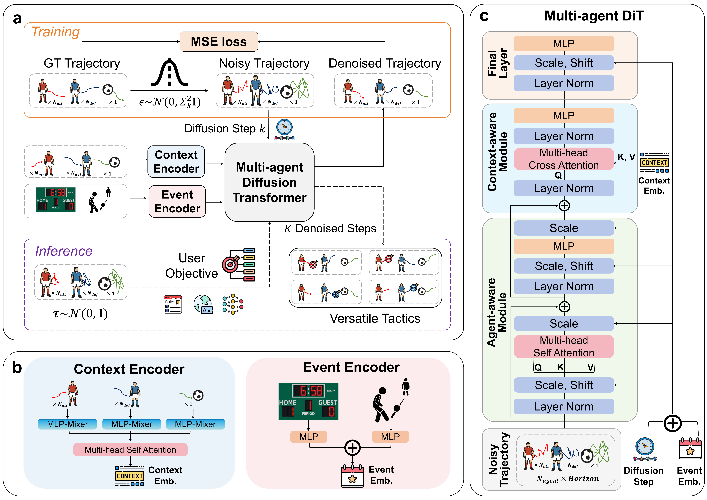
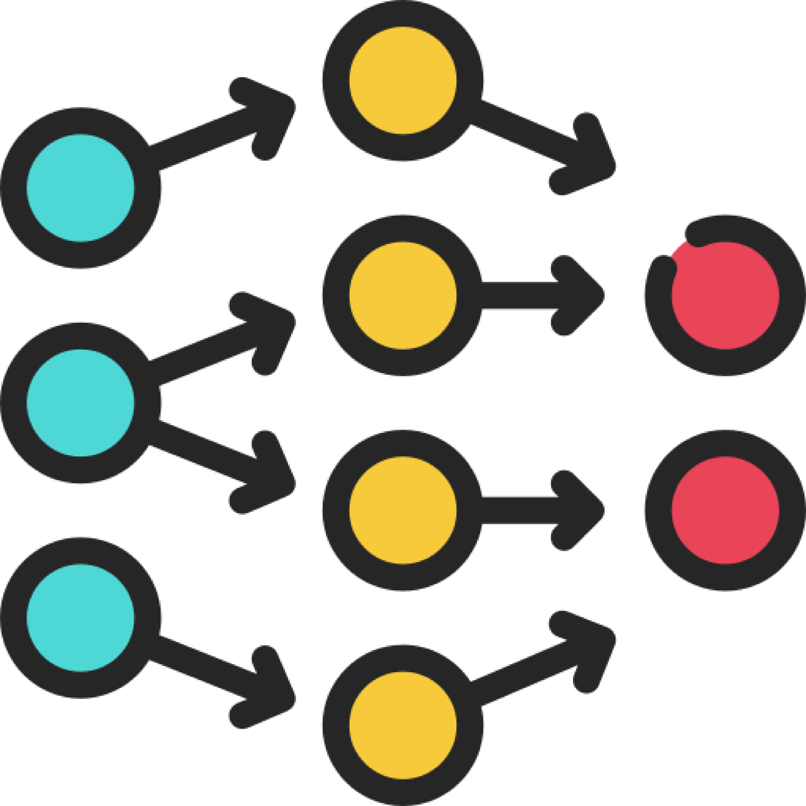
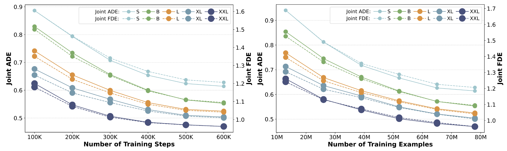
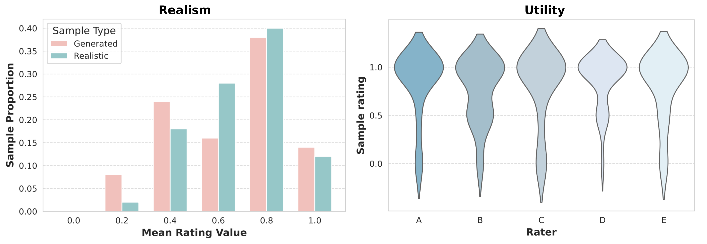

TacticGen: Grounding Adaptable and Scalable Generation of Football Tactics
TacticGen reframes football analytics from predicting what may happen to generating what should happen. It models
coordinated player and ball movements with a multi-agent diffusion transformer, then guides generation toward tactical
objectives expressed as rules, natural language, or learned value functions.
3.3M+annotated events for training100Mreal tracking frames1432matches from 2018-202580%of experts favored TacticGen
Highlights
Why this paper matters
TacticGen is positioned as a foundation-oriented model for football tactical design:
accurate enough to model realistic movement, adaptable enough to respond to different
objectives, and scalable enough to improve with larger models and more data.
01
From prediction to generation
The paper reframes football analytics from forecasting likely play evolution to
generating coordinated tactical alternatives.
02
Multi-agent football modeling
TacticGen jointly models the ball and 22 players, explicitly handling
cooperative and competitive interactions.
03
Zero-shot flexible tactical guidance
During inference, a single trained generator can be steered by rule functions,
natural language prompts, or learned value models.
04
Validated with practitioners
Case studies with football experts show generated tactics are hard to distinguish from real play
and tactically valuable.
Motivation
Why football tactics should be generated, not only predicted
This figure sets up the problem shift behind TacticGen: instead of only forecasting how play may unfold, the system should
also produce coordinated tactical alternatives that align with a coach's intent.
Motivation Figure
From descriptive football analytics to tactical decision support
The motivation figure introduces the paper's core question: how to move from passive trajectory prediction toward
controllable generation that can assist tactical planning.
Framework
The TacticGen pipeline
After the method overview, this figure gives a cleaner system-level view of how context encoding, diffusion generation, and
tactical guidance fit together inside the complete framework.

Framework Figure
Conditioning, generation, and guidance in one model stack
The framework figure ties the paper together by showing how event context, player-ball history, and guidance signals are
fused into a unified generation pipeline for tactical control.
Method
A controllable diffusion framework for football tactics
TacticGen builds on diffusion transformers and adapts them to football with explicit agent interaction modeling, context-aware
conditioning, and guidance at sampling time.
Architecture
The core generation pipeline
These three components define the base system: a multi-agent denoising backbone, a context encoder that summarizes match state,
and an inference-time objective module that makes the generator steerable.
Backbone
DiT Core
Multi-agent Diffusion Transformer
TacticGen extends DiT into a multi-agent setting so that noisy future trajectories can be denoised while preserving team-level
coordination and opponent response.
Joint denoising across players and ball keeps team structure coherent.
Context
Temporal Fusion
Self-attentive context encoding
Past trajectories, ball history, event type, goal difference, and timestamps are fused into context embeddings through
MLP-based encoding, self-attention, and adaptive conditioning.
Rich match context is compressed into controllable conditioning signals.
Guidance
Inference Control
Objective-driven generation
Classifier guidance steers samples at inference time, letting one pretrained generator adapt to tactical goals without retraining.
One generator, multiple tactical objectives, no extra training pass required.
On top of the shared architecture, TacticGen exposes multiple control interfaces so the same pretrained model can respond to
different tactical design goals.
Guidance
Three ways to steer tactical generation
The guidance layer supports explicit football rules, coach-friendly language prompts, and learned value signals, covering both
interpretable control and performance-oriented optimization.
01
Rule-based guidance
Differentiable tactical rules encode concepts like support width, zone occupation, or pitch control value.
Best for explicit tactical priors and interpretable control.
02
Language-based guidance
Natural language instructions are turned into executable guidance functions, enabling high-level tactical prompting.
Best for coach-friendly prompts and rapid what-if iteration.
03

Value-based guidance
A learned value model injects long-term utility into generation, guiding trajectories toward strategically stronger outcomes.
Best for optimizing downstream tactical quality over longer horizons.
The same architecture is deployed in two practical operating modes, letting TacticGen cover both realistic trajectory
prediction and more deliberate tactical design workflows.
Operating Modes
Two practical operating modes
Both modes share the same football-native generator, but differ in how much future ball information is available at inference
time and, as a result, what kind of coaching workflow they support best.
TacticGen-PPredictive
Short-context trajectory prediction
Predicts future player and ball trajectories from a short observed context window, making it a natural fit for realistic generation.
Uses recent match context without assuming the future ball path is known.
Best suited to realistic future trajectory prediction and model benchmarking.
TacticGen-CConditional
Ball-conditioned tactical generation
Conditions on a full ball trajectory so the model can coordinate player movement around an anticipated ball path.
Provides stronger control when analysts or coaches already have a target ball path in mind.
Best suited to tactical planning, design exploration, and controlled what-if generation.
Dataset
Large-scale football dataset with aligned event and tracking data
The dataset combines analyst-annotated event logs and full-pitch optical tracking, then standardizes them into
event-centric training examples with consistent spatial coordinates, temporal context, and future trajectory targets.
League coverage
1,432 matches across 2018-2025
The dataset spans multiple top-tier competitions, led by the EFL Championship and Premier League.
EFL Championship829
Premier League489
MLS, Eredivisie, and others114
Event dataTracking dataAligned sequences
From raw match feeds to aligned multi-agent decision points
Each sample starts from two synchronized sources: Opta-style play-by-play annotations for on-ball actions, and
optical tracking for the ball plus all players. An adapted Needleman-Wunsch alignment process links the two streams,
producing structured football events that can directly condition trajectory generation.
25 Hz to 10 Hztracking is down-sampled for stable sequence modeling
105 x 68 mall positions are mapped onto one standardized pitch
Attack to the rightcoordinates are flipped accordingly so tactical direction is consistent
Matches1,432
Top-tier matches used to build the aligned dataset.
Events3,374,599
Annotated football events after alignment.
Frames97,760,895
Processed timesteps containing agent positions.
Sequence Setup10 + 54
10 context frames followed by 54 subsequent frames.
Data schema
What one training example contains
Every event stores match metadata, tactical context, agent states, and the future trajectory target needed for training.
01
Metadata
Game ID, event ID, episode ID, timestamps, and match bookkeeping.
02
Match state
Goal difference, possession length, event outcome, and ball-control status.
03
Action labels
30 unified action types plus the next-event ball destination.
04
Team indicators
Home vs. away, attacking vs. defending, and episode termination flags.
05
Context tensors
Past agent positions and features over the fixed context window.
06
Trajectory tensors
Variable-length future player trajectories with aligned agent features.
Event Visualizer
Explore the football event data distribution
Event type:AttackingDefendingNeutral
Bar heights are proportional to log10(count + 1).
Trajectory Visualizer
Inspect spatial density on the normalized pitch
The heatmap is built from 1,692,800 coordinates from a single game, while the overlay dots show a smaller sampled subset for readability.
Low densityHigh density
Results
Accurate, adaptable, and scalable
On the paper's large-scale football dataset, TacticGen improves prediction quality over prior baselines and then uses the same
modeling foundation to support controllable tactical generation.
Trajectory Error0.29Best ADE reported for TacticGenFinal Position0.52Best FDE reported for TacticGenJoint Accuracy0.92Best joint FDE in the comparison tableMiss Rate10.66%Best joint miss rate in the comparison table
Scaling
Scaling behavior
From 1.74M to 311.50M parameters, up to 600K training steps, and up to
78M training examples, TacticGen shows consistent scaling gains across model size, training time, and
data scale.

Model ScaleScaling from 1.74M to 311.50M parameters consistently lowers error.Data ScalePerformance continues to improve as data grows, up to full 78M examples.
Human Study
Expert validation
In case studies with five experts, generated trajectories achieved a realism F1 of 0.50 ± 0.07, and guided
TacticGen samples received a utility score of 0.81 ± 0.04.

RealismExperts achieved an average realism classification F1 of 0.50 ± 0.07.PreferenceGuided TacticGen was preferred over ground truth in 20 of 25 pairs.
Videos
Main Paper Videos
These clips show how TacticGen compares with real trajectories and how generation changes under different tactical objectives,
including rule guidance, pitch-control guidance, language prompts, and value-based guidance.
Ground-Truth Event
Start With the Reference Play
All videos below are based on the same Pass event. The interactive view here shows the
ground-truth play first, so viewers can get familiar with the player layout,
ball location, and overall structure before comparing generated tactics.
Red markers indicate the attacking team, blue markers
indicate the defending team, and green indicates the ball.
Main Paper Videos
Conditional Prediction
Rule Guidance
Pitch Control Guidance
Pitch Control Map
Language Prompt
Value Guidance
Conditional Prediction
TacticGen-C Prediction
This clip shows conditional trajectory prediction for a pass event, where player movement is generated while following the observed ball trajectory.
Human Evaluation
Interactive Expert Evaluation
We study TacticGen with two complementary human-facing tasks: a Realism Test that asks whether a clip
looks generated or realistic, and a Utility Preference task that asks which clip demonstrates better
tactical value. The clips and pairs shown on this webpage are only showcase examples, not the full
set of human evaluation samples.
Realism Test
Can You Tell Generated Plays From Real Ones?
We added 10 expert case-study clips on realism. Watch each play, decide whether it looks generated or
realistic, and the interface will reveal the correct answer immediately after your choice.
Single Task Across All 10 Clips
Are the post-event player movements generated or realistic?
Judge only the post-event player trajectories. The ball trajectory is always real. Use the buttons or swipe horizontally to move through the clips.
Clip 1 / 10
Clip 01Clearance
Select your answer
Clip 2 / 10
Clip 02Pass
Select your answer
Clip 3 / 10
Clip 03Interception
Select your answer
Clip 4 / 10
Clip 04Take On
Select your answer
Clip 5 / 10
Clip 05Clearance
Select your answer
Clip 6 / 10
Clip 06Save
Select your answer
Clip 7 / 10
Clip 07Ball Touch
Select your answer
Clip 8 / 10
Clip 08Pass
Select your answer
Clip 9 / 10
Clip 09Pass
Select your answer
Clip 10 / 10
Clip 10Pass
Select your answer
Realism Test
Task Overview
You will watch a set of short football videos. Each video follows the same pattern:
Event context (10 frames) - real tracking data showing the ball and all 22 players' x / y positions for the 10 frames immediately before the on-ball event (pass, clearance, ball-touch, etc.).
Post-event segment (N frames) - after the event occurs, the video continues tracking the ball and all players until one of the following: the next on-ball action occurs, the tracking data ends, or the 64-frame limit is reached. The ball trajectory is always authentic; the 22 player trajectories may come from real tracking data or from AI-generated predictions.
Freeze frame - the final frame is held for ~3 s to let you inspect the ending.
Additional Notes
The attacking team always moves left to right.
Sampling rate: player tracking is captured at 10 Hz, and videos are rendered at 5 fps, so 1 s of video equals 0.5 s of real-world play.
The ball trajectory is always real; only the post-event segment of 22 players may be synthetic.
This webpage contains 10 expert case-study clips: 5 generated and 5 realistic. They are presented here as a fixed curated set rather than a randomized annotation batch.
For each clip, the post-event player movements are always entirely realistic or entirely generated, without mixing the two.
We provide five realistic clips to get you familiar with the animations here: Google Drive Folder.
Your Task
For each video, decide whether the post-event player movements look realistic (authentic) or generated (AI-predicted). Keep in mind that the ball trajectory is always realistic.
PS
You may submit your responses after completing at least one video. Clicking the Submit button will record all of your already selected answers to the server at once. For convenience, you might choose to submit your responses every 5 or 10 events.
If you'd like to take a break and continue later, you're also welcome to temporarily submit your progress. For example, if you complete and submit feedback for the first 10 videos, you can return later and resume directly from page 11.
When clicking the submit button, it will require you to provide some simple feedback during your annotation progress.
Utility Preference
Which Clip Shows Better Tactical Utility?
These expert case studies compare a Generated clip against a Realistic clip. For each pair,
decide whether the left clip, the right clip, or equal shows better utility.
Single Task Across All 6 Pairs
Which side demonstrates better tactical utility?
Judge utility for the highlighted team only. Realism should be a least consideration. You can choose Left, Right, or Equal, then compare your choice with the experts.
Left ClipRight Clip
Pair 1 / 6
Pair 01Attacking TeamPass_2367635_58331
Which clip looks better for the attacking team?
Left ClipRight Clip
Pair 2 / 6
Pair 02Attacking TeamPass_2370870_101489
Which clip looks better for the attacking team?
Left ClipRight Clip
Pair 3 / 6
Pair 03Attacking TeamPass_2450488_130479
Which clip looks better for the attacking team?
Left ClipRight Clip
Pair 4 / 6
Pair 04Defending TeamPass_2367605_27626
Which clip looks better for the defending team?
Left ClipRight Clip
Pair 5 / 6
Pair 05Defending TeamPass_2367781_146072
Which clip looks better for the defending team?
Left ClipRight Clip
Pair 6 / 6
Pair 06Defending TeamPass_2367824_24038
Which clip looks better for the defending team?
Utility Preference
Task Overview
You will watch a set of short football videos. Each pair follows the same pattern:
Event context (10 frames) - real tracking data showing the ball and all 22 players' x / y positions for the 10 frames immediately before the on-ball event (pass, clearance, ball-touch, etc.).
Post-event segment (N frames) - after the event occurs, the video continues to track the ball and all players until one of the following conditions is met: the next on-ball action occurs, the tracking data is completed, or the 64-frame limit is reached. The ball trajectory is always authentic, while the trajectories of the 22 players may either come from real tracking data or from AI adjustments that optimize the movement of one team.
Freeze frame - the final frame is held for ~3 s so you can inspect the ending.
Additional Notes
The attacking team always moves left to right.
Sampling rate: player tracking is captured at 10 Hz, and videos are rendered at 5 fps, so 1 s of video equals 0.5 s of real-world play.
The ball trajectory is always real. Minor disturbances may come from data inaccuracies, so please ignore those when making your judgment.
These six pairs are expert case studies: three focus on attacking utility and three focus on defending utility.
Your Task
For each pair of videos, determine which clip of the post-event player trajectories for the highlighted team demonstrates better tactics and positioning strategy. Please treat realism as a least consideration in this task.
After you choose, the interface will reveal whether your selected clip was Generated or Realistic, and will also show how the experts voted.
Paper
Paper and Citation
Authors
Author Biographies
Ph.D. Student
Sheng Xu
Ph.D., CUHK-SZ, ongoing
B.S., Northwestern Polytechnical University, 2023
Sheng Xu is currently pursuing the Ph.D. degree with the School of Data Science, The Chinese University of Hong Kong, Shenzhen. He received the B.S. degree in computer science and technology from Northwestern Polytechnical University in 2023. His research interests include reinforcement learning, embodied AI, and sports analytics. His work has been published in international venues including ICLR, ICML, NeurIPS, and TMLR. He is also a core developer of EmbodiChain, a GPU-accelerated and modular platform for embodied intelligence. He has served as a reviewer for conferences and journals, including ICLR, ICML, NeurIPS, TMLR, ECCV, AAAI, and AISTATS.
Assistant Professor
Guiliang Liu
Ph.D., Simon Fraser University, 2020
B.S., South China University of Technology, 2016
Guiliang Liu is currently working as an Assistant Professor at the School of Data Science at The Chinese University of Hong Kong, Shenzhen. He obtained his undergraduate degree from South China University of Technology. He then earned his Ph.D. in computer science from Simon Fraser University in Canada and completed postdoctoral research at the University of Waterloo and the Vector Institute in Canada. His research primarily focuses on reinforcement learning and embodied decision-making. In the field of safe reinforcement learning, he leverages inverse constraint inference methods to enhance the safety of reinforcement learning systems. Additionally, he specializes in embodied robotic manipulation skills, developing efficient data engines to improve robotic operation in complex tasks, and designing robust control algorithms to ensure the safety and stability of humanoid robots in challenging environments. His research collaborators include Baidu Research, Huawei Noah's Ark Lab, and DexForce Research.
Director, Real Analytics
Tarak Kharrat
Ph.D., University of Manchester, 2015
M.S., La Sorbonne (Paris 1-Paris 6), 2010
B.S., ENSTA Paris, 2009
Tarak Kharrat is currently the director at Real Analytics, London, U.K., where he leads AI and analytics research for football decision-making and player recruitment. He received the Ph.D. degree in statistics from the University of Manchester in 2015. He has also held lead data scientist roles at ComplyAdvantage and Kickdex, as well as research fellow appointments with the University of Liverpool and the University of Salford. His work focuses on football analytics, predictive modeling, and machine learning, and he has published influential research on soccer player evaluation, plus-minus ratings, football score forecasting, and statistical modeling.
Postdoctoral Researcher
Yudong Luo
Ph.D., University of Waterloo, 2024
M.Sc., Simon Fraser University, 2020
B.Eng., Shanghai Jiao Tong University, 2018
Yudong Luo is currently a postdoctoral researcher with the Department of Decision Science, HEC Montreal, and Mila-Quebec AI Institute. He received the Ph.D. degree in computer science from the University of Waterloo in 2024, the M.Sc. degree in computing science from Simon Fraser University in 2020, and the B.Eng. degree in computer science from Shanghai Jiao Tong University in 2018. His research interests include reinforcement learning, risk-sensitive decision-making, machine learning, and sports analytics. His work has appeared in leading venues such as NeurIPS, ICLR, IJCAI, RA-L, and ICRA. He has also served as a reviewer for major conferences and journals, including NeurIPS, ICLR, ICML, ICRA, and JMLR.
Mohamed Aloulou is currently pursuing the M2 IASD master's program in artificial intelligence at Universite PSL as the final year of the Ingenieur Polytechnicien Program in applied mathematics at Ecole Polytechnique. He previously completed research internships at Birmingham City F.C., within Real Analytics, where he contributed to offline reinforcement learning tools for football tactics. His research interests include machine learning, reinforcement learning, and sports analytics.
Principal Engineer, Real Analytics
Javier López Peña
Ph.D., Universidad de Granada, 2007
M.S., Universiteit Antwerpen, 2006
B.S., Universidad de Granada, 2003
Javier López Peña is currently a Principal AI Engineer at Real Analytics. He received the Ph.D. degree in mathematics from Universidad de Granada in 2007, the master's degree in noncommutative algebra and geometry from Universiteit Antwerpen in 2006, and the bachelor's degree in mathematics from Universidad de Granada in 2003. He has held a broad range of academic and industry leadership roles, including Senior Data Science Manager at Wayflyer, Head of Data Science at LoalApp and Oakam Ltd, Teaching Fellow at University College London, and Head of Research and Development at Kickdex. Earlier in his career, he was a Marie-Curie Postdoctoral Fellow at Queen Mary University of London, and a Postdoctoral Fellow at the Max Planck Institute for Mathematics. His work spans artificial intelligence, statistical modeling, predictive analytics, and football analytics.
Engineer, Real Analytics
Konstantin Sofeikov
Ph.D., University of Leicester, 2017
Konstantin Sofeikov is currently an Engineer with Real Analytics. He received the Ph.D. degree in applied mathematics from the University of Leicester in 2017, with a dissertation on measure concentration in computer vision applications. He previously held senior machine learning and research positions at WorldRemit, ComplyAdvantage, Arm, and Apical. Trained as an applied mathematician, he has extensive experience in machine learning, computer vision, scientific computing, and large-scale data processing systems. His work includes AI model evaluation pipelines, mathematical method development, image processing, and the design and improvement of efficient research and data infrastructure.
CTO, Real Analytics
Adam Reid
Adam Reid is currently the Chief Technology Officer at Real Analytics, where he leads the development of artificial intelligence systems for football decision-making. He previously founded and served as CTO of Kickdex, where he led the design and development of a football prediction and data science platform. Earlier in his career, he held a range of senior technical and software engineering roles across consulting, analytics, and financial technology. His expertise includes software architecture, machine learning systems, and applied AI for real-world decision support.
Head of First Team Recruitment Data
Steven Spencer
Postgraduate Diploma, PFA Business School, ongoing
Steven Spencer is currently the Head of First Team Recruitment Data at Birmingham City F.C., where he specializes in data-driven player identification, squad construction, and recruitment strategy. Drawing on a distinctive background across elite football, recruitment, and leadership, he combines analytical insight with practical football expertise to support first-team decision-making and long-term competitive advantage. He previously founded and led Futura Sports Management, worked as a football consultant with Real Analytics, and built extensive experience as a licensed football agent. Earlier in his career, he was a professional football player with Sheffield United PLC. He is also pursuing a Postgraduate Diploma in Global Football Sport Directorship at PFA Business School.
Head of Recruitment
Joe Carnall
City Technology College Kingshurst, 2005
Joe Carnall is currently the Head of Recruitment at Birmingham City F.C., after previously serving as the club's Chief Scout. He has built an extensive career in elite football across recruitment, scouting, tactical analysis, and performance analysis, with senior roles at Birmingham City, Millwall, Stoke City, Derby County, Nottingham Forest, and Sheffield United football clubs. With deep experience in player identification, squad building, opposition and tactical analysis, and recruitment strategy, he is known for combining traditional football insight with data-informed decision-making to support high-level first-team operations. His professional interests include player recruitment, scouting, performance analysis, and football analytics.
Professor
Ian McHale
Ph.D., University of Manchester, 2001
B.S., University of Liverpool, 1998
Ian McHale is currently a Professor of Sports Analytics with the University of Liverpool, after previously serving as a Professor at the University of Salford. He received the Ph.D. degree in statistics from the University of Manchester and the bachelor's degree in mathematical physics from the University of Liverpool. His research focuses on statistics in sport, sports forecasting, and the analysis of gambling markets and gambling-related behavior. He was the founding Chair of the Royal Statistical Society's Statistics in Sport Section, has served as an Associate Editor of the International Journal of Forecasting and the Journal of Quantitative Analysis in Sport, and has published extensively on ranking methods, forecasting in football, tennis, cricket, and golf. He has also advised football clubs, the Premier League, and other major organizations, and in 2005 created the EA SPORTS Player Performance Indicator, the official player ratings system of the Barclays Premier League.
Professor and School Director
Oliver Schulte
Ph.D., Carnegie Mellon University, 1997
M.Sc., Carnegie Mellon University, 1993
B.Sc., University of Toronto, 1992
Oliver Schulte is currently a Professor and School Director with the School of Computing Science at Simon Fraser University, where he also directs the Structured Machine Learning Lab and is affiliated with the Department of Statistics, the VINCI institute, and the SFU Sports Analytics Group. He received the Ph.D. and M.Sc. degrees in logic and computation from Carnegie Mellon University in 1997 and 1993, respectively, and the B.Sc. degree in computing science from the University of Toronto in 1992. His research interests include machine learning for structured data, learning theory, computational game theory, and sports analytics. He has made influential contributions to relational learning, reinforcement learning for sports analytics, and predictive modeling, and has received recognition, including an NSERC Discovery and Accelerator award, a Strategic Project partnership award, and a best paper award at the StarAI@IJCAI workshop.
Presidential Chair Professor
Hongyuan Zha
Ph.D., Stanford University, 1993
B.S., Fudan University, 1984
Hongyuan Zha is a Presidential Chair Professor at The Chinese University of Hong Kong, Shenzhen, and the Associate Dean of the School of Data Science. He received the B.S. degree in mathematics from Fudan University in 1984 and the Ph.D. degree in scientific computing from Stanford University in 1993. He previously served on the faculty of Georgia Institute of Technology and Pennsylvania State University, and also worked at Inktomi Corporation. His research interests include machine learning and its applications. He has published over 400 papers in leading journals and conferences, with more than 42,000 citations. His honors include the Leslie Fox Prize, the SIGIR 2011 Best Student Paper Award as advising professor, and the NeurIPS 2013 Outstanding Paper Award.
Full Professor
Wei-Shi Zheng
Ph.D., Sun Yat-sen University, 2008
B.S., Sun Yat-sen University, 2003
Wei-Shi Zheng is currently a Full Professor with Sun Yat-sen University. He has published more than 200 papers, including more than 150 publications in main journals (IEEE TPAMI, IJCV, and IEEE TIP) and top conferences (ICCV, CVPR, SIGGRAPH, ECCV, and NeurIPS). His research interests include person/object association and activity understanding, and the related weakly supervised/unsupervised and continuous learning machine learning algorithms. He has served as the Area Chair of ICCV, CVPR, ECCV, BMVC, and NeurIPS. He has joined the Microsoft Research Asia Young Faculty Visiting Programme. He is a Cheung Kong Scholar Distinguished Professor. He was a recipient of the Excellent Young Scientists Fund of the National Natural Science Foundation of China and the Royal Society-Newton Advanced Fellowship of the U.K. He is an Associate Editor of IEEE Transactions on Pattern Analysis and Machine Intelligence, Artificial Intelligence journal, and Pattern Recognition.
Paper
Access the manuscript PDF and citation information below.
@article{xu2026tacticgen,
title = {TacticGen: Grounding Adaptable and Scalable Generation of Football Tactics},
author = {Xu, Sheng and Liu, Guiliang and Kharrat, Tarak and Luo, Yudong and Aloulou, Mohamed and Lopez Pena, Javier and Sofeikov, Konstantin and Reid, Adam and Spencer, Steven and Carnall, Joe and McHale, Ian and Schulte, Oliver and Zha, Hongyuan and Zheng, Wei-Shi},
journal = {arXiv preprint arXiv:2604.18210},
year = {2026},
url = {https://arxiv.org/abs/2604.18210}
}